5.5. Advanced topics
5.5.9. An EDA approach to experimental design
5.5.9.9. Cumulative residual standard deviation plot
5.5.9.9.11. |
Motivation: How do we Use the Model for Extrapolation? |
-

-
\( \hat{Y} = 5 + 2 X_{2} + X_{1} \)

But, again, a final word of caution: the "pseudo data" that results from the modeling process is exactly that, pseudo-data. It is not real data, and so the model and the model's predicted values must be validated by additional confirmatory (real) data points. A more balanced approach is that:
-
Models may be trusted as "real" [that is, to
generate predicted values and contour curves],
but must always be verified [that is, by the addition of
confirmatory data points].